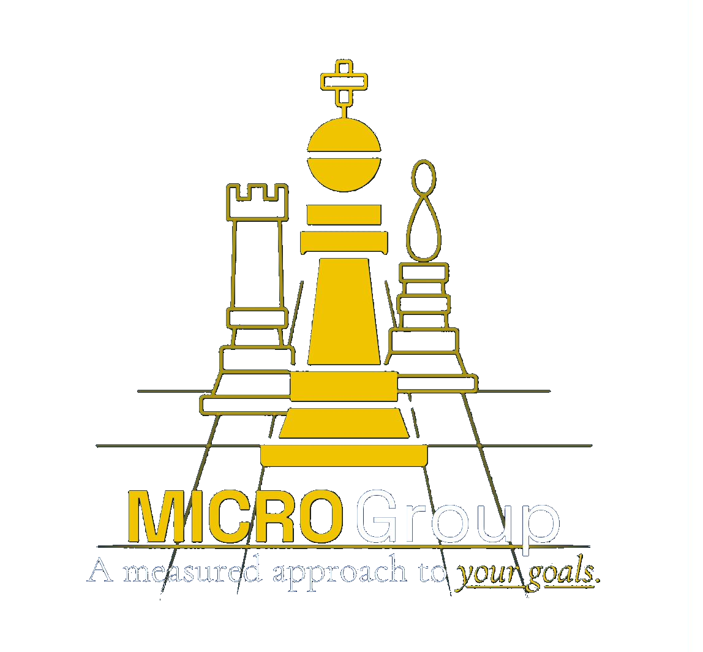

A multi-service consultancy dedicated to serving nonprofit, education, and government institutions through expertise in Management, Integration, Culture, Research, and Operations.
Engage MICRO Group
Every engagement begins with a free thirty minute consultation, where we learn what your organization is facing and where MICRO can help.
Rates vary dramatically with timeframe, context, deliverables, and organizational size, and cannot be quoted without a consultation.
Pursuant to State standards of conduct and statutory provisions regarding conflicts of interest for legislative employees (Tex. Gov’t Code § 572.051 and Tex. Penal Code § 36.07), the practitioner’s capacity to engage in government, legislative, or related political consultancies is restricted. All such services are hereby suspended indefinitely to ensure compliance with the law and to prevent any appearance of professional impairment.1
What Guides Us +
Mission
To provide strategic, research-driven consultative solutions.
Vision
To become a trusted partner in guiding institutions toward excellence and sustainability.
Values
A client-centric institution committed to integrity, innovation, and collaboration.
Approach
We tailor our work to the unique needs and goals of your organization.
Core Subjects & Expertise +
Management
Strategic management and planning, executive leadership development, organizational strategy, and interim director services.
Integration
Programmatic and organizational integration, software implementation, and organization-wide training.
Culture
Culture development, team building, and employee engagement that strengthen collaboration and cohesion.
Research
Employee pay analysis, market analyses, and policy impact studies for evidence-based decisions.
Operations
Operational management that increases productivity, optimizes resources, and enhances effectiveness.
1 Government and legislative advisory consultancies are indefinitely suspended in strict compliance with state conflict of interest laws (Tex. Gov’t Code § 572.051) applicable to legislative agency personnel.